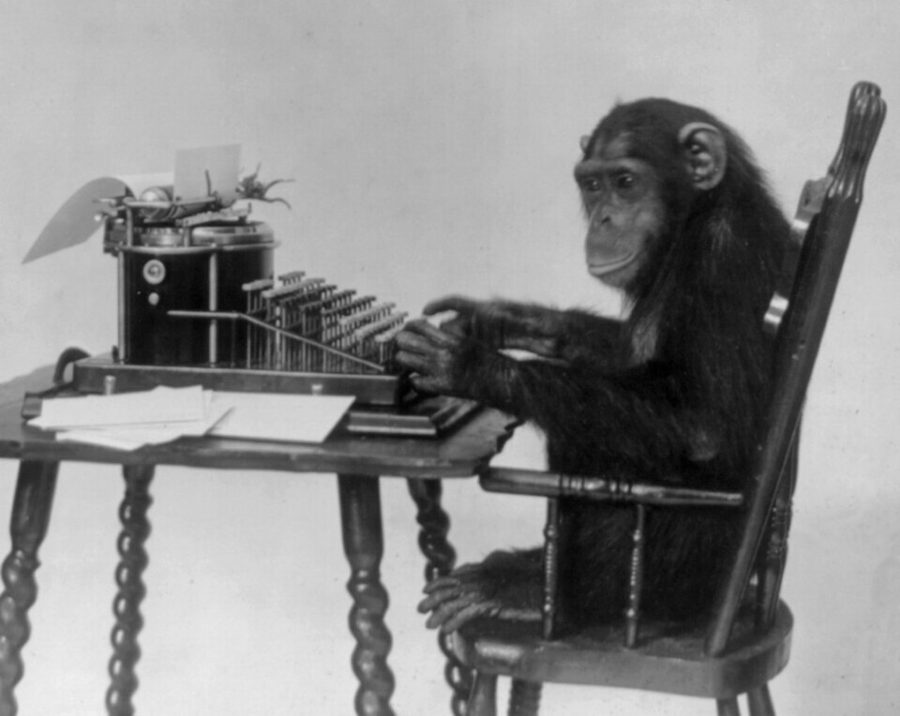
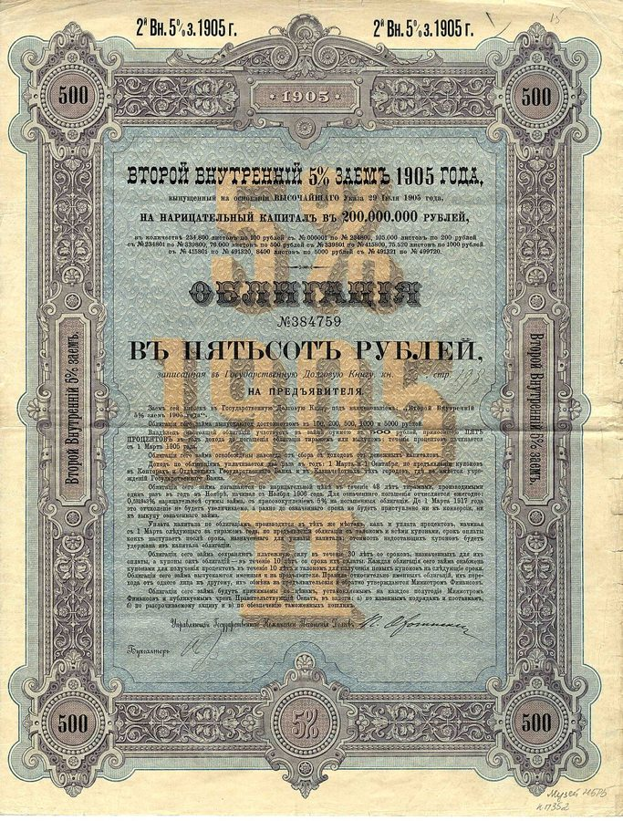

strongly built typewriters
… front of (strongly built) typewriters …
（做得很结实的）打字机
括号里的冷笑话：不结实的早被猴子砸烂了。
第二部从这一页开始。先是三段很短的篇首语：一群猴子坐在打字机前乱敲，其中一只碰巧打出了荷马的《伊里亚德》，你敢不敢押它接着打出《奥德赛》？然后才是第 8 章本身，作者讲了三个例子：住在纽约公园大道、却觉得丈夫失败的律师太太，一本讲美国富人都很节俭的畅销书，一位基金大师算出来的「劫富济贫」投资法。读的时候抓一条线：你看到的赢家，是从多少人里筛出来的，被筛掉的人去了哪里。

第一部讲稀有事件：少见的事，来了代价很大。第二部换一个方向，作者说要把已有文献里讲过的几种随机性偏误快速过一遍，§4 是这一部的路线图。这一页里他几次回头：§2 提到前面对比过的牙医和靠运气的行当（第 1 章 §11、第 2 章开头），§3 提到第 1 章 §8 里 Nero 看着对门邻居的房子越扩越大时的心情，§10 说第 7 章已经讨论过归纳问题。下一章接着讲同一种偏误，更偏技术。
§9 作者说可以把那本畅销书里富翁的平均财富砍掉一半来纠偏，这个幅度是他顺手举的（原文用 say），不是算出来的。§7 马克比 99.5% 的美国人挣得多这类百分比，也是作者给编的人物配的数，不是统计。
我们看到的赢家，能告诉我们多少「怎样才能赢」？
读的时候带着这几个问题。不用先找答案，读完回来对照「检查一下理解」。
这一页其实是两样东西。§1–§3 是第二部的篇首语，三小段，把一个思想实验一步步推到现实：先是打字机前的猴子，再是数一数一共有多少只，最后是现实里那些数不到、也看不见的猴子。§4 交代第二部各章的分工，可以跳过。章旨之后才是第 8 章：三个例子，一个比一个技术。第一个写得像短篇小说，§5、§6 全是马克的履历和珍娜的邻居，到 §7 才亮出要说的事，作者还顺手拿自己这本书开了个玩笑。第二个从一本畅销书讲起，§8 中间插进一段对巴菲特式节俭的牢骚，§10 又跳到作者祖父买的黎巴嫩国库券，读到这两处会觉得跑题了；§10 最后一段是全章的小结。第三个很短，一位基金大师的回测，结尾顺手质疑了「乐观的人会成功」，把话头交给下一章。
这一页是原书和译本的第二部篇首语（§1–§4）加上第 8 章（§5–§11），一共 11 节；第 8 章的章名和章旨排在 §4 之后。粗体是本站给的节名，后面是档和译本字数；下面是译本的小标题和这一节在译本电子书里开头的几个字（搜它就能跳过去），再下面是英文原文的开头。「先读」是这一章的骨架，「有空」好看、跳过不丢线，「可跳过」读不读都行。读完打个勾。
先把这一页用到、作者默认你懂的几个概念讲一遍。讲的是概念本身，作者拿它推出什么，读原书时自己看。别页讲过的概念，点链接过去看。
一件事落到某一个人头上概率很小，放到很多人身上，就几乎一定有人碰上。统计里管这叫多重比较问题：比较的次数多了，总会有几次看上去很惊人，其实是碰巧。
算一算：抛硬币连着十次正面，概率是 1/1024，约千分之一。只有 5 个人在抛，至少一个人做到的概率约 0.5%；1000 个人在抛，约 62%；一万个人，几乎肯定有人做到。所以「这个人连赢十次」惊不惊人，先要问「一共有多少人在抛」。在已知有多少人参与的前提下再算概率，就是条件概率的想法。
在这一页：§2 作者说很少有人去数猴子，说的就是这件事。拿一个人的业绩记录判断他，第 9 章还要细算。
做统计时，如果样本只收了「活下来」的那些对象，被淘汰的已经从数据里消失，算出来的结果就会偏向好的一边。这叫幸存者偏差，是选择偏差（selection bias）的一种：毛病不在算法，在样本是怎么来的。
日常的例子很多。「GitHub 上星最多的项目都用了某个框架」，可那些用了同一个框架、做到一半就没人维护的项目，你根本搜不到。「辍学创业的富豪有好几位」，辍学创业没成的人不会上新闻。基金也一样：业绩差的基金常被关掉或并进别的基金，十年后翻历史数据，只剩活下来的那些，平均业绩自然好看。下面是一个编出来的小例子。
在这一页：§3 第一次把这个词讲清（前几页提过）；§7、§9、§11 是作者给它举的三个例子。
基金是把很多人的钱合在一起，交给专业的人（基金经理）去投资。投资人按份额分盈亏，经理按管理的钱每年收一笔管理费，不管赚赔都收。
主动基金的经理自己挑股票，想跑赢大盘；指数基金不挑，照着标普 500 这类指数的成分照单全买，费用低得多，成绩就是指数本身。主动经理的成绩常按排名比：今年排在前四分之一，还是后四分之一。养老金、大学基金这类大钱，往往不止交给一个经理，而是在好几位经理之间分配，再按业绩调整：从谁那里撤钱、给谁加钱，本身就是一门生意，也是研究题目。
在这一页：§11 那位大师研究的，就是该怎样在一群经理之间调钱。
回测是拿历史数据假装执行一个策略，算它「当年要是这么做」能赚多少，并没有真投钱。程序员很好理解：像拿过去的流量日志重放一遍，看新算法在旧数据上表现如何。
回测最常见的坑出在数据上。一类是幸存者偏差：拿今天还在的股票、今天还在的基金去回放过去，当年倒闭、退市、被关掉的那些不在名单里。另一类是不小心用上了当时还不知道的信息，叫前视偏差（look-ahead bias）。讲究的数据库会保留已经消失的对象，按「当时能看到什么」重放。
在这一页：§11 那位大师的罗宾汉投资法就是一次回测，译本：「紙上策略」。
按在书里出现的顺序排，标题前是节号。只讲到读懂这一页需要的程度。
「无限只猴子乱敲打字机，总有一只能打出某部名著」是概率论里流传很久的一个比喻，常叫无限猴子定理，用来说明次数够多，概率再小的事也会发生。作者拿荷马的两部史诗当道具：《伊里亚德》写特洛伊战争，《奥德赛》写战后奥德修斯漂泊十年回家。§2 里他又换成卡萨诺瓦的回忆录《我的一生》和 Al Gore 的《濒临失衡的地球》（1992）。Gore 是克林顿时期的美国副总统（1993–2001），这本书谈环境，作者顺手挖苦了它一句。
Nero Tulip（译本：「尼洛．屠利普」）是作者编的交易员，第 1 章的主角之一。§3 作者回头提他，说即使学过概率，面对社会压力也会犯傻。指的是第 1 章 §8：Nero 瞧不起对门的高收益债交易员 John，可看着那栋房子一次次扩建，心里还是不是滋味。他和这一页的珍娜是一对：一个是作者编的交易员，一个是作者编的律师太太。
公园大道（Park Avenue）是纽约曼哈顿的一条南北大道，上东区那一段两边是战前建的高级公寓楼，向来是有钱人的地址。这类楼很多是合作公寓（co-op）：住户买的不是一套房的产权，而是拥有整栋楼的那家公司的股份，入住要经楼里的董事会审核，所以邻居多半是同一个阶层的人。马克走的是美国大律所的标准路：靠超长工时熬上几年，评上合伙人（partner），从拿工资变成分所里的利润，书里说通常要七年。SAT 是美国的大学入学考试，当时满分 1600。
那本书调查的是当时已经有钱的美国家庭，主角是推迟消费、把钱拿去投资的人（accumulators，译本：聚財者）。巴菲特（Warren Buffett）是伯克希尔·哈撒韦公司的掌门人，世界上最有钱的人之一，几十年住在奥马哈一栋早年买下的普通房子里，常被当作有钱又节俭的榜样。索罗斯在第 7 章讲过。
牛市（bull market，译本：多頭市場）是股价长时间普遍上涨的行情。美股从 1982 年夏天起涨了将近二十年，中间有 1987 年股灾这样的大跌，但很快涨回来，到 2000 年才见顶；作者说 1982 年买一般的股票，一块钱涨到将近二十块。原文括号里那句 still at the time of writing 多半是第一版（2001）留下的口吻，第二版没改：2000 年到 2002 年美股连跌了三年。他拿来对照的两个年份：1929 年秋天的大崩盘之后是大萧条，到 1935 年前后人们对股市已经没了兴趣；1982 年之前的十几年，股价扣掉通货膨胀一直在缩水。

国库券（Treasury bills，译本：國庫券）是政府发的短期借条，平时被当作最安全的投资，前提是那个国家的货币不出事。作者的祖父买的是以黎巴嫩里拉计价的，黎巴嫩 1975 年起打了十五年内战，里拉在 1980 年代大幅贬值。Michael Milken 是 1980 年代把高收益债做成大市场的人，人称垃圾债券之王，1990 年认了六项重罪，坐了约两年牢，2020 年获特朗普赦免。沙俄政府发过大量债券，1918 年苏维埃政府宣布不认旧政权的债，这些债券成了废纸。
养老金（pension funds）替雇员管退休的钱，保险公司要为将来的赔付存钱，两者都得假设一个长期回报率，用来算今天该存多少：假设越高，眼下要掏的钱越少。作者写书时，美欧很多机构假设股票长期每年能赚 9% 左右。社会保障（Social Security）是美国政府办的养老保险，2000 年前后美国在争论要不要把其中一部分钱投进股市，作者结尾那句反问就冲着这个。
读英文原文时值得停一下的词和句：交易员的行话、作者的反话和双关、熟词生义。灰色斜体是原句里连续的几个词，在英文电子书里搜它就能找到；标「每个字都认识」的，是每个词都眼熟、合起来意思却变了的，最容易读错。点「记下」收进词本。
对着译本读这一章时，下面这些地方会把人读歪。方框里是译本的原句，在译本电子书里搜它就能找到；灰色斜体是英文原文那一处。只收意思错了、反了、漏了的，措辞上的出入和台湾用语不收。全书的勘误汇总在译本勘误。
… and a very great one at that …
译本：「也非常擅長於做那件事」
原文的 one 指前面的机会：半懂概率的人告诉自己，过去强的人将来强的机会很大，而且是非常大。作者在挖苦这种过度的自信。译本说成「非常擅长」，变成在夸这个人的本事，原文说的是概率。
… some well-known (but unspecified) piece of work …
译本：「但不確定是如何知名」
unspecified 是「没有事先指定」：猴子足够多时，有一只碰巧打出随便哪一部名著，并不奇怪。这正是数猴子的要害，指定一部和随便哪一部，概率差得远。译本读来像是那部作品不知道有多出名。
… to Janet, worth hundreds of millions …
译本：「那個叫隆納德什麼的」
这一句后面原文还有：为什么这个人身家几亿，而她丈夫上过哈佛耶鲁、智商那么高，却没什么积蓄？译本漏了「身家几亿」，珍娜拿谁来和丈夫比就看不出来了，而这一章讲的正是比较的对象。
… we are cut to live in …
译本：「當我們生活在非常小的社區中」
be cut to 是「天生被造成」：人类生来是为很小的群体活的，所以很难跳出身边的圈子评估自己。这是在说人性。译本读来像一个条件：住在小社区里的时候才这样，可珍娜住的是曼哈顿。
… these are unlikely to lead lavish lives …
译本：「發現他們不可能過著豪奢的生活」
unlikely 是「不太可能、多半不会」，说的是一种倾向。译本的「不可能」把那本书的发现说成了绝对的，读者会以为书里的富人没有一个过得奢侈。
… Virtually all of the subjects became rich …
译本：「幾乎所有的人都已經因為資產價格上漲」
subjects 是那本书调查的对象。原文说这些富翁几乎都是靠 1982 年起的资产涨价发的财。译本说成「几乎所有的人」都因此致富，像是作者在说那些年人人都发了财。
… by cashing them from the Soviet government …
译本：「並且在蘇俄政府還本之後還買更多」
原文是那位聚财者还想找苏维埃政府把沙皇的债券兑成现金，笑点在于新政权不认旧债，这笔钱永远拿不回来。译本说成苏俄还了本、他又加码买进，和史实相反，这个例子也就不成其为「攒错了东西」。
读完这一章再看。下面是作者在这一章里的主张，由本站按主张之间的逻辑重新组织，不按原书的顺序；每条后面是节号，拿不准就回书里那一节再读一遍。
他不否认过去表现好，能推定将来也好一些；但这个推定可能弱到对决策没用。强弱取决于两件事：这一行靠运气的成分有多大，一共有多少只「猴子」在碰运气。他说自己很少（rarely）见到有人去数猴子，按参与人数去算有人连赢的概率。商业更吃这个亏，因为它比别的行当更靠运气。依据是思想实验和推理。
§2现实里的猴子数不清，更看不见：失败的人自然消失了，剩下的赢家让我们把成功的机会看高了。他还说，人回应的不是概率，而是社会对它的评价，学过概率的人也一样（他拿 Nero 举例）。§10 小结时他换了个说法：在所有可能的随机历史里，表现最好的那一个最显眼，因为输家不会现身。
§3 §10珍娜觉得丈夫失败，作者说她用错了分布来排名：和全美国比，马克胜过 99.5% 的人；和中学、哈佛、耶鲁的同学比也在前头；只有和公园大道的邻居比才垫底，因为那里本来就把失败者挡在外面。他说人天生为小群体而活，很难跳出身边的圈子看自己；讲道理也安慰不了人，他的书大概只能给她一小时的宽慰。
§7《隔壁的百万富翁》只调查了现在有钱的人，没算那些同样省钱、却攒错了东西的人（要贬值的货币、后来倒闭的公司），他说该把平均财富砍掉一半左右再看。第二重更严重：这些人赶上了 1982 年起史上最大的牛市，致富靠资产涨价，换成 1935 年或 1982 年写，书会是另一个样子。他对节俭本身另有不满，但说那不是书的要害。
§8 §9 §10他说忽视幸存者偏差是慢性病，在专业人士里也许（perhaps）尤其如此，因为大家受训去用眼前的信息。养老金相信股票总赚 9%，统计没错，但只是过去。那位大师的罗宾汉回测只用了今天还在的经理，亏了又翻身的才留得下来；该做的是取五年前在场的全体经理往后算。他还顺手说，乐观也可以预示失败。
§10 §11合起来：看到一个赢家，先问他是从多少人里冒出来的、没冒出来的人去了哪里。作者把这一招用在三个地方：一个人怎样看自己（珍娜），一本成功学的畅销书，专业人士的研究（回测）。
A small knowledge of probability can lead to worse results than no knowledge at all.— §1。本站译：懂一点概率，结果可能比完全不懂还糟。
这是一句下判断的话，套的是英语老话 a little knowledge is a dangerous thing。矛头指向前一句的 middlebrow：学过一点统计、会算「连赢这么多次的概率多小」的人，最容易把运气当本事，因为他们只算了一个人，没数一共有多少人。译本：「會比完全不懂機率，落到更慘的下場」意思到了，只是前面那个「半吊子」没译出来。
In a nutshell, the survivorship bias implies that the highest performing realization will be the most visible.— §10。本站译：一句话，幸存者偏差意味着表现最好的那一次实现，最显眼。
这是作者给全章下的定义，原文把后半句排成斜体。关键词是 realization：统计里一次随机试验的实际结果叫「实现」，作者把一个人的履历看成所有可能的随机历史里实现了的一条（第 2 章的另类历史）。它不是说赢家都靠运气，而是说你看到的那一批，天然偏向最好的。译本：「表現最好的一個能見度最高」。
这本书 2004 年出第二版，书里讲的多是 1980–2003 年的事。下面挑出这一页里能被后来的研究或事情检验的说法，分「书里 / 当时 / 今天」几栏，并给一个结论。结论判的是标题里「书里的说法：」后面那一句。全书的这一节汇总在今天怎么看。
读完作者的主张，再看它站不站得住。每一块摆出三样：主流怎么看，作者怎么看，本站的评论。最后一句是本站对这一页的总体判断。
主流看法：经济学和心理学都发现，人满不满意很大程度看和谁比。Luttmer 2005 年在《经济学季刊》用美国的追踪调查发现：自己收入不变时，邻居挣得越多，自评的幸福感越低。心理学还有享乐跑步机的说法：收入涨了，满意度过一阵又回到原来的水平。
作者的看法：珍娜用错了分布给丈夫排名；住在只有赢家的地方，就看不见输家；讲道理消不掉这种情绪。§7
本站的评论：这是全章最好懂、也最站得住的例子，后来的数据和他说的一致；劝她搬去蓝领街区虽然半开玩笑，倒和 Luttmer 的结果对得上。但严格说，珍娜身边的输家没有「消失」，只是不住在这栋楼：这更像选错了参照群体，是幸存者偏差的近亲。那几个百分比是作者给编的人物配的，别当统计引用。
主流看法：那本书是对美国富裕家庭的问卷调查，描述了当时的富人有什么习惯。统计学的一般原则是：只调查结果好的人，能描述他们的样子，却推不出这些习惯就是致富的原因，还要看做了同样事情的人里有多少没成。储蓄、长期分散投资，本身是理财教科书的标准建议。
作者的看法：书有双重幸存者偏差，许诺的好处被夸大了；书后注释里他还说，Stanley 后来的书把「富人爱冒险」当成致富的原因，同样没看冒险失败的人。他另外不认为有钱又节俭算什么美德。§8 §9 §10
本站的评论：他打中的是推理，不是节俭。省下钱长期分散投资，大概率比花掉强，书的方向没错，错在把好处说得太确定、太大。他给的减半幅度只是举例，没有算过。对巴菲特那段是他的价值观，他自己也说那不是要害，读时可以分开。
主流看法：Carhart 1997 年在《金融杂志》用包含已消失基金的数据研究业绩能不能延续：赢家的领先大多能用市场的动量效应和费用解释，唯一明显延续的，是最差的那批基金一直差。Choi 和 Zhao 2021 年的复查发现，1994 年以后连这种延续也很难找到。
作者的看法：罗宾汉回测的样本只有幸存者，亏了又翻身的才留在里面；正确做法是从五年前在场的全体经理算起。§11
本站的评论：他的批评是教科书级的，对写回测的程序员尤其有用：拿今天的成分股、今天的基金名单回放过去，就是同一个坑。干净的数据给出的答案比他走得更远：最差的基金往往继续差，买输家站不住；赢家也没多少延续，追赢家同样不灵。这正是指数基金后来越来越受欢迎的一个原因。
本站的总体看法：这一页讲的概念，是这本书里后来被研究反复证实的一个：看到赢家，先数一数有多少人在比、输家去了哪里。基金研究和幸福研究都站在作者这边。要打折扣的是他顺手给的数（减半的修正）和对节俭、乐观的几句评论，那是他的口气和价值观，不是论证。
先在心里答，再点开。答错的那题，回书里把对应那一节再读一遍。
每个人十年全赚的概率约千分之一，可一千个人里至少一个做到的概率约 62%。所以看到一个十年常胜的经理，先要问一共有多少人在比，这就是作者说的去数猴子。
思想实验里猴子能数；现实里别的猴子数不清，更看不见，失败的人自然消失了，眼前只剩赢家。于是我们感觉到的成功机会，比真实的高。
他住的那栋楼，住户本来就是事业极其成功的企业高管、华尔街交易员和企业家，失败的人进不来。和这样的样本比，谁都显得差；作者说珍娜用错了分布来排名。
第一重：样本只有现在有钱的人，没算同样省钱、却攒了要贬值的货币或后来倒闭的公司股票的人。第二重：这些人赶上了 1982 年起的大牛市，靠资产涨价致富，换一个年代，同样的做法未必有同样的结果。
样本只有今天还在营业的经理，其中表现差的都是亏了又翻身的，投他们当然赚。应该取五年前在场的全部经理，连后来退出的一起往后算。
证券够多，总有一只过去的记录特别好看，这不说明它将来也会这样。拿挑出来的一条历史记录当保证，和养老金拿过去的统计当保证，是同一个错。这种从大量数据里挑出好看结果的做法，第 9 章会细讲（数据挖掘）。
缺了已经关掉的老店：要知道当年坚持手工的店里有多少没撑下来，才能比。这和作者批那本畅销书只调查了现在的富翁，是同一个毛病。
用一句话说这一页：
想一想：你平时拿来和自己比的是哪一群人（同学群、同事、刷到的那些人）？那一群人是怎么筛出来的，被筛掉的那些，你看得见吗？
读过又忘了，从这里想起来。挑的是这一页最值得记住的故事和说法，不按原书顺序；每条后面是节号，想细看就回书里那一节。全书各页的这一节都收在全书回顾。
一句话：你看到的赢家是从很多人里筛出来的，被筛掉的人不会站出来告诉你。
无限只猴子里总有一只能打出《伊里亚德》。作者问：找到它以后，你敢拿毕生积蓄押它下一本打出《奥德赛》吗？
§1马克哈佛、耶鲁毕业，比 99.5% 的美国人挣得多，在公园大道的公寓楼里却是最穷的一户。珍娜每个月崩溃一次，作者建议他们搬去蓝领街区。
§7作者家里就有省吃俭用的人：祖父攒黎巴嫩里拉的国库券，曾祖父在 1930 年代买阿根廷的房产。这样的人进不了《隔壁的百万富翁》。
§9 §10养老金相信股票长期总赚 9%。作者说他能在四万种证券里找出一只过去年年涨两倍于此的，然后问：要不要把社保的钱放进去？
§10一位基金大师回测发现，把钱从最好的经理那里撤出、交给最差的，回报更高。作者说研究生一眼就能看出毛病：样本里只有活下来的经理。
§11